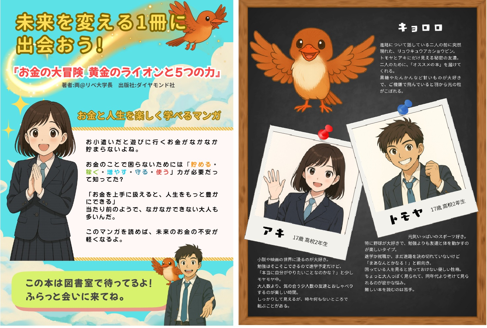
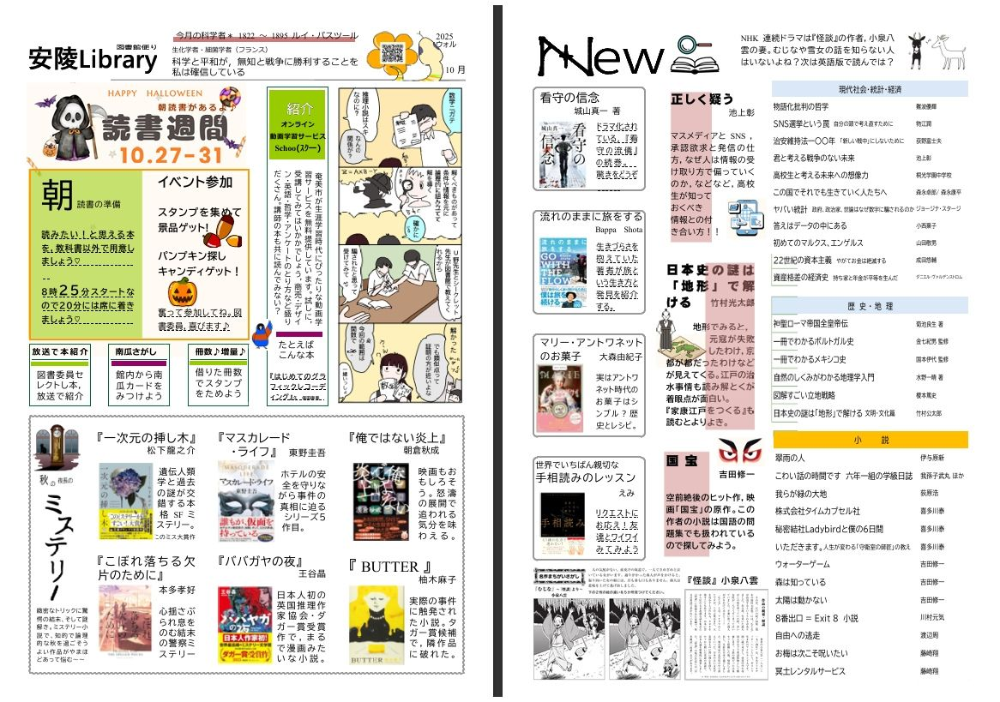
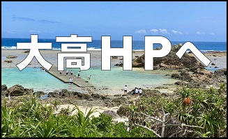

図書館について
大島高校の図書館は「安陵図書館」という名称で親しまれています。この名称は、昭和25年に図書館が整備されて以来、長い歴史の中で大切に受け継がれてきたものです。館内には一般的な学習資料に加えて、奄美に関する貴重な地域資料も所蔵しており、郷土学習や調査活動にも幅広く活用できます。
また、静かに落ち着いて学習できる環境が整っているため、自習スペースとして利用する生徒も多く、日々の予習・復習や受験勉強の場としても適しています。生徒の皆さんが気軽に立ち寄り、学びや発見の場として親しんでいただければ幸いです。
利用案内
貸出
冊数：5冊
期間：2週間
ルール
- ・館内は静かに利用してください。
- ・飲食は原則禁止（蓋つき飲料は可）。
- ・本は丁寧に扱う。（折り曲げ・書き込み禁止、元の場所に戻す）
場所
正門近くの和親館2F 入口正面奥の階段をのぼり左手
駐車場
正門から入りすぐ右手にある来客用駐車場
※一般の方でも閲覧可能です。貸出は不可。
蔵書・座席・ジャンル
蔵書概要
| 蔵書総数（冊） | 約25,378 冊 |
|---|---|
| 雑誌タイトル数 | 120 タイトル |
| 電子資料 | なし |
開館日・時間
| 月曜日 | 7:30〜19:00 |
|---|---|
| 火曜日 | 7:30〜19:00 |
| 水曜日 | 7:30〜19:00 |
| 木曜日 | 7:30〜19:00 |
| 金曜日 | 7:30〜19:00 |
| 土曜日 | 10:00〜15:00（不定） |
| 日曜日 | 10:00〜15:00（不定） |
座席情報
| 窓側席 | 12 席 |
|---|---|
| 楓の机（個別） | 20 席 |
| グループテーブル | 8 席 |
| 合計 | 40 席 |
主な所蔵ジャンル
| 教科書・参考書 | 高校教材、受験参考書 |
|---|---|
| 小説・文学 | 近代・現代文学、古典 |
| 科学・技術 | 理工系入門〜専門書 |
| 社会・時事・歴史 | 時事問題やニュース解説本究 |
| 資格・検定・進学関連 | 英検・漢検・数検・大学入試などの対策本 |
| 趣味・生活・実用書 | 料理、手芸、スポーツ、旅行、パソコン |
| 雑誌・新聞・年鑑 | 学習雑誌、科学雑誌、趣味系雑誌 |
| 図鑑・事典 | 生物、動物、植物、宇宙、などの図鑑・百科事典 |
| 芸術・文化 | 音楽、美術、演劇、映画、写真究 |
| 郷土資料 | 奄美関連の資料・研究 |
年間行事
| 1月 | 新刊展示 |
|---|---|
| 2月 | ビブリオバトル |
| 3月 | 進路資料フェア |
| 4月 | 子ども読書とミニイベント |
| 5月 | 読書週間 |
| 6月 | 文化祭 |
| 7月 | ビブリオバトル |
| 8月 | 夏季特別貸出 |
| 9月 | 読書週間 |
| 10月 | 先生方のおすすめ冊子作製 |
| 11月 | 郷土資料展示（奄美） |
| 12月 | 読書週間 |
図書だより



よくある質問
1. 利用・貸出について
Q1.何冊まで借りられますか？
A1.最大5冊まで。貸出期間は2週間です。延長は1回まで（予約がない場合）。
Q2.貸出カードを忘れた場合
A2.図書担当に相談してください。本人確認ができれば貸出できる場合があります。
Q3. 参考資料や郷土資料も借りられますか？
A3.図書担当に相談してください。本人確認ができれば貸出できる場合があります。
2. 利用マナーについて
Q4. 図書室での飲食は良いですか？
A4. 飲食は原則禁止（蓋つき飲料は可）。
Q5. 本を破ったり書き込んだらどうなる？
A5. 注意を受ける、場合によっては弁償となることもあります。本は丁寧に扱いましょう。
連絡・外部リンク
所在地・学校連絡
鹿児島県立大島高等学校
〒894-8588
鹿児島県奄美市名瀬安勝町7-1
電話：0997-52-4451
学校のお知らせ（最新情報）は、公式サイトでご確認ください。
【図書館公式インスタグラム】

【大島高校安陵図書ホームページ】

【ホームページからのお知らせ】
HPがリニューアルしました！
更新日(26/3/1)
メンテナンス日:平日24:00~翌日7:00